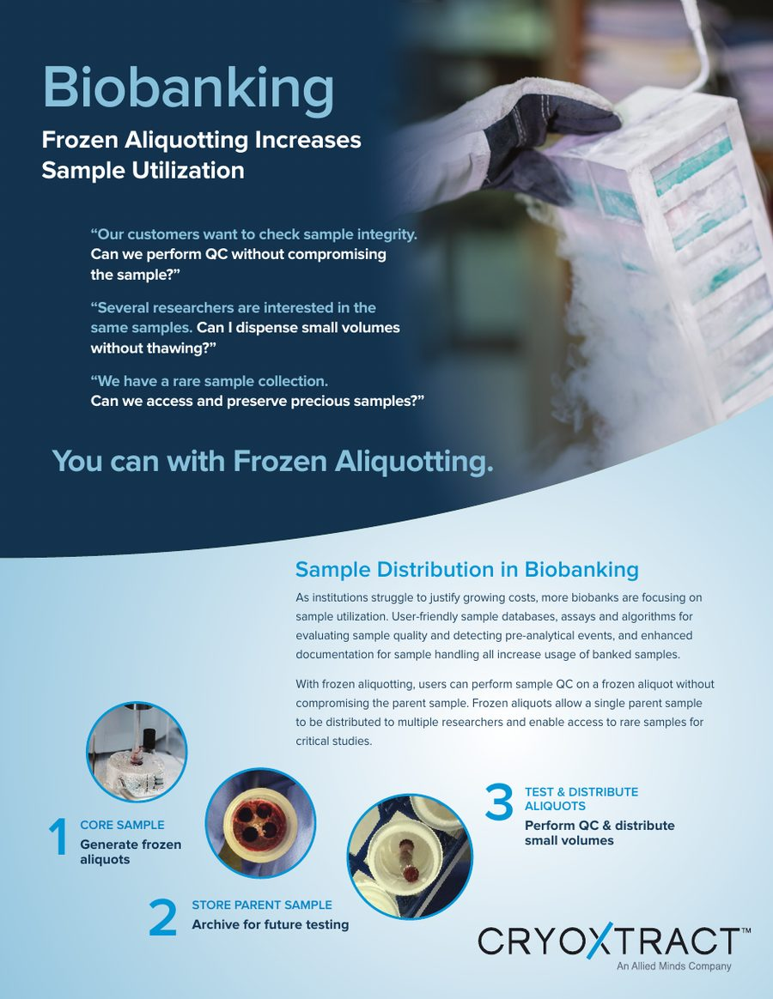
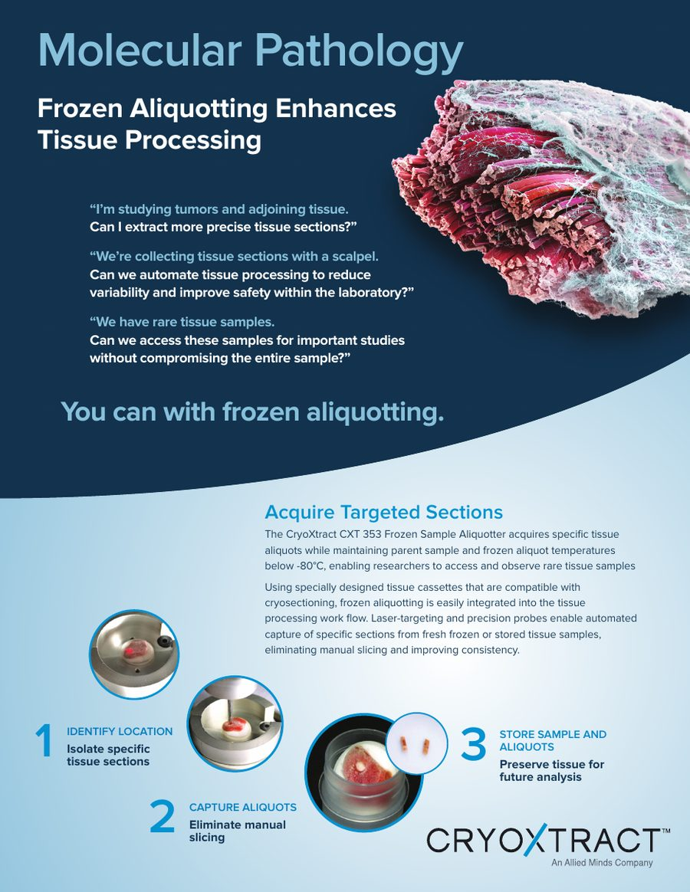
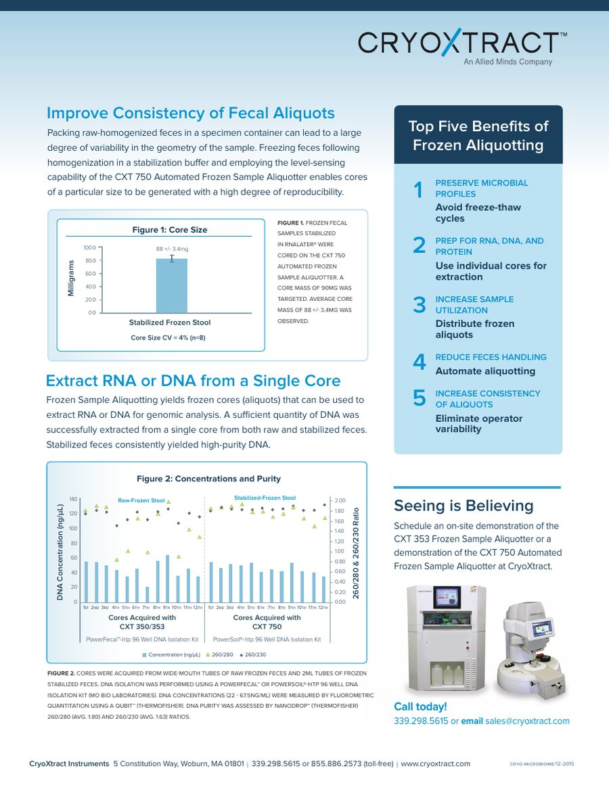

One system, four applications
Each application got its own sheet, built on the same frame. The sheet opens with the questions that field already asks. The answer comes next, the same every time. You can with frozen aliquotting.
Below that sit the data, a three-step workflow and the top five benefits, always in the same place. A scientist who picked up two sheets at a booth could compare them in seconds. The only things that change are the field, the image and the proof.




Application sheets for bioanalysis, biobanking, microbiome and molecular pathology. Same frame, different field.


The backs carry the data. Charts, the three-step workflow, and the top five benefits in the same spot on every sheet.